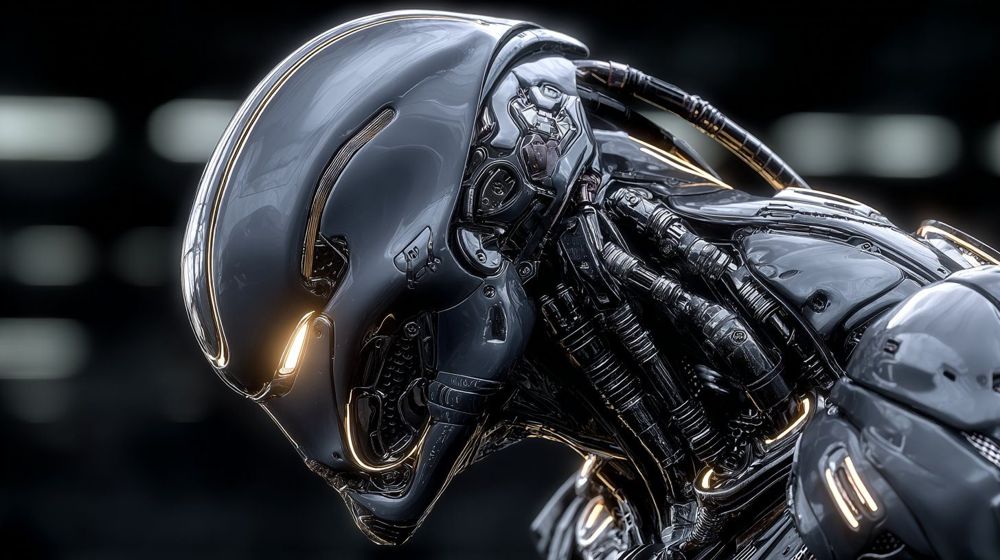

Six systems define what VEYRONIS-01 can do — and one directive defines what it's for.
Two hundred-plus channels of sight, sound, heat and depth fused into a single read of the room, refreshed a thousand times a second.
A reasoning core that weighs intent and context the way a person does — interpreting a situation rather than matching a command. This is the part that thinks before it moves.
From perfectly still to shielding you in under a heartbeat. Force stays in reserve, released only when the moment demands it.
A sealed thoracic core gives nineteen hours of active duty and recovers on contactless charge. It doesn't sleep while it's standing guard.
Two metres of obsidian alloy that reads a room before it enters one. Often, the safest outcome is the one where nothing happens at all.
Triple-redundant cores, hardware kill-authority, and behaviour fixed to a protective directive. It cannot be turned against the people it guards.
